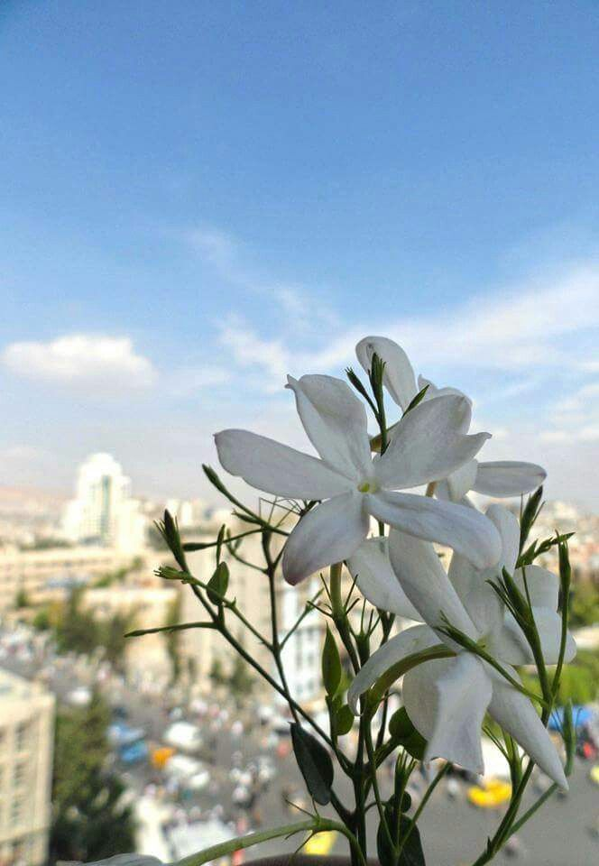

Damascus: The City Of Jasmine
Founded in the 3rd millennium B.C., Damascus was an important cultural and commercial centre, by virtue of its geographical position at the crossroads of the orient and the occident, between Africa and Asia. The old city of Damascus is considered to be among the oldest
continually inhabited cities in the world. Excavations at Tell Ramad on the outskirts of the city have demonstrated that Damascus was inhabited as early as 8,000 to 10,000 BC. However, it is not documented as an important city until the arrival of the Aramaeans. In the Medieval period, it was the centre of a flourishing craft industry, with different areas of the
city specializing in particular trades or crafts.
The city exhibits outstanding evidence of the civilizations which created it - Hellenistic, Roman, Byzantine and Islamic. In particular, the Umayyad caliphate created Damascus as its capital,
setting the scene for the city's ongoing development as a living Muslim, Arab city, upon which each succeeding dynasty has left and continues to leave its mark.